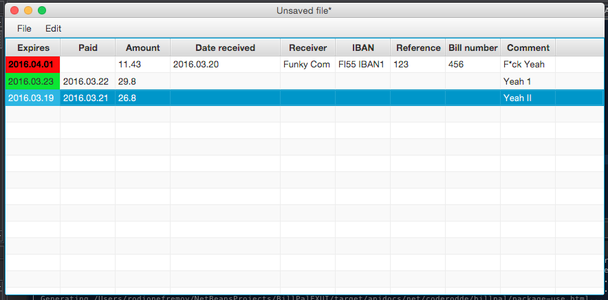

BillPal is a simple graphical application for managing bills. You can create, edit and save your set of bills. It has nice coloring futures which allow you to easily see the status of your bills.

How to use it?
The following short video will show you about everything you need to put your bills in order.
Cost?
Using BillPal aint't cost a thing. Even better, it's open source.
Where to download?
The Java archive file here (Run by double-clicking the file. You must have at least JRE installed in order to run the Pal.)
Mac OSX .dmg installer here (Use this if you are on a Mac and you don't have Java installed.)
Windows installer here (Use this if you are on Windows and you don't have Java installed.)